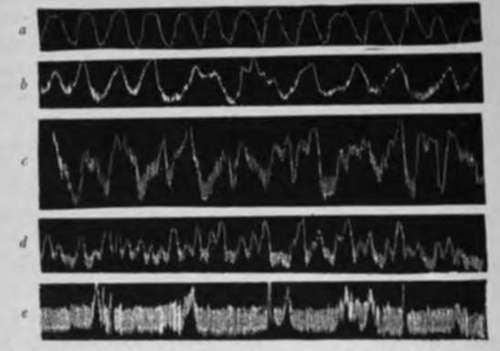

V. Movements Of The Rabbit's Stomach During Hunger
Description
This section is from the book "The Control Of Hunger In Health And Disease", by Anton Julius Carlson. Also available from Amazon: The Control of Hunger in Health and Disease.
V. Movements Of The Rabbit's Stomach During Hunger
Rogers, working in the author's laboratory, made gastric fistulas in rabbits by opening the abdominal cavity about i inch to the left of the mid-ventral line and as close to the costal border as possible and suturing the muscularis of the fundic portion of the stomach to the peritoneum and oblique muscles and then the gastric mucosa to the skin. These fistulas were made rather small, so that there would be little leakage of gastric juice or loss of food. At times a small rubber tube was inserted into the stomach and left there for longer or shorter times to prevent closing of the fistula. Within 36 hours after the operation the animals are usually feeding. These rabbits, if properly taken care of, are in as good condition as normal animals.
Graphic records were made using the rubber balloon method with a manometer pressure of 2 to 4 cm. of chloroform. Medium-sized adult rabbits were used in this set of experiments. In no case did any animal survive a period of continuous starvation of more than 7 days. In animals that died of starvation there were always considerable amounts of residue in the stomach. In the moist condition in which this was removed from the stomach it weighed from 8 to 13 gm. Normally the moist contents of the adult rabbit's stomach weigh 90 gm. or more. Soon after being deprived of its usual food the rabbit provides a substitute by eating its own excreta. Putting the animal in a wire-bottom cage does not prevent this. The only practicable way to prevent it is to inclose the animal in a cage so fitted with a lid, that the rabbit's head is held outside, its body inside the cage. No doubt such a position proves very irksome* to the rabbit, but after becoming accustomed to the position the activities of the stomach were not inhibited. In an animal so. fixed, the stomach, as noted by Swirski, empties itself in about 24 hours. Nevertheless, during normal conditions of life the rabbit's stomach is never empty.
Since normally the stomach is never empty, it is to be expected that gastric digestion peristalsis will always persist. But as the period of starvation is prolonged, the stomach contractions are altered. Instead of being the gentle peristalsis of normal digestion, they become relatively powerful contraction waves which rapidly follow one another, with a tendency for each peristaltic wave to pass into a short period of tetany. There is no indication of rest or periodicity to these stronger contractions until a short time before death from starvation. Auer has pointed out that during normal peristalsis in the rabbit, the stomach is incessantly active. During hunger the strength of these contractions is accentuated.
Fig. 7.-Contractions of the rabbit's stomach, a, normal digestive peristalsis; 6, after 24 hours' starvation; c, after 75 hours' starvation; d, after 92 hours' starvation; r, after 110 hours' starvation. The animal died a few hours after this tracing (r) was taken (Rogers).
Following this period of increased activity during starvation, there comes a period of depression. This is coincident with marked general weakness of the animal or even coma. The decline in the vigor of the stomach activities comes on gradually. The contractions become weaker, of shorter duration, and alternating with short periods of rest. In the last stage of starvation there may occur prolonged contractions or periods of tetany lasting from 2 to 3 minutes (Fig. 7).
Gastric tonus variations were frequently seen during hunger, but not commonly during normal digestion peristalsis. May not the increasing muscle tone of the stomach, as starvation is prolonged, play a part in causing the sensation of hunger ? Certainly a state of greater contraction of the stomach on the substances remaining within it, as starvation is prolonged, is the first apparent change. Rabbits will show signs of hunger, such as restlessness, gnawing of dry wood, and eating cotton, before the character of the movements as recorded by this method shows any striking change from the normal digestion peristalsis. The increased activity of the stomach that later appears is no doubt also accompanied by psychic changes. The appearance of gastric tetany, if the animal is still able to move about, is marked by restlessness.
In order to determine whether or not the stomach of the rabbit when it contains no food is quiescent, the animal was so caged as to be excluded from its feces. The only difference observed between an animal so caged and one free to move about was that the increased vigor of the stomach contractions comes on sooner in the former. In about 12 hours after feeding the contractions become very much stronger than normal digestion peristalsis, and this activity both of contractions and tonus variations persists after the stomach has emptied itself of food.
Continue to:
- prev: IV. Movements Of The Empty Stomach In Dogs
- Table of Contents
- next: VI. Gastric Hunger Contractions Of The Guinea-Pig